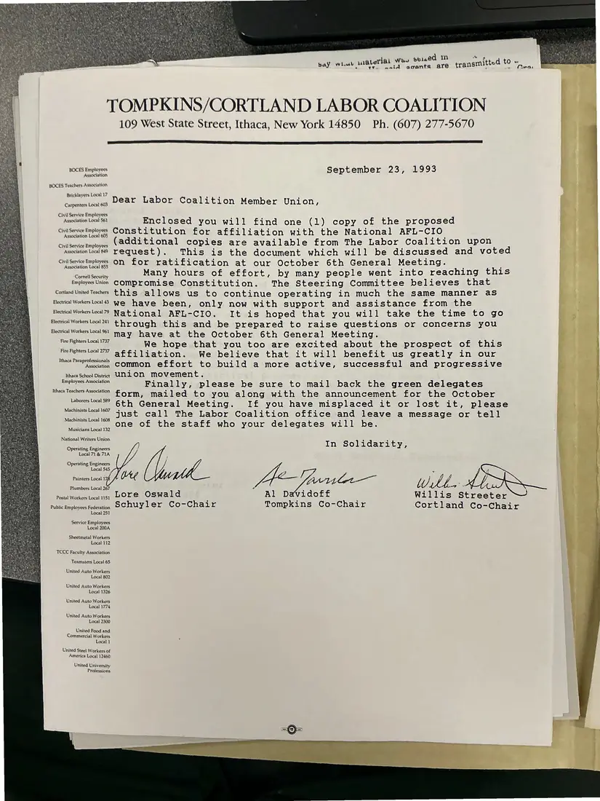
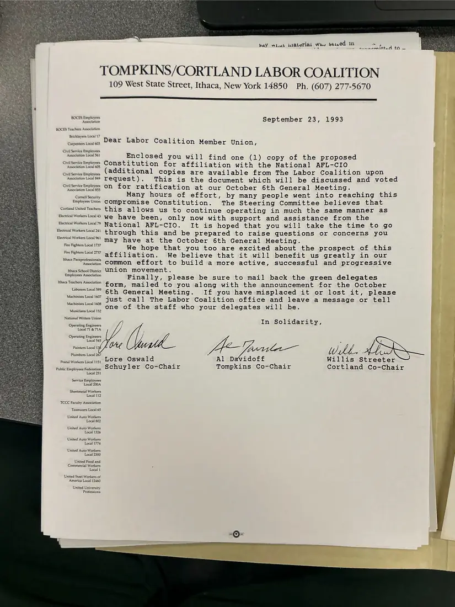
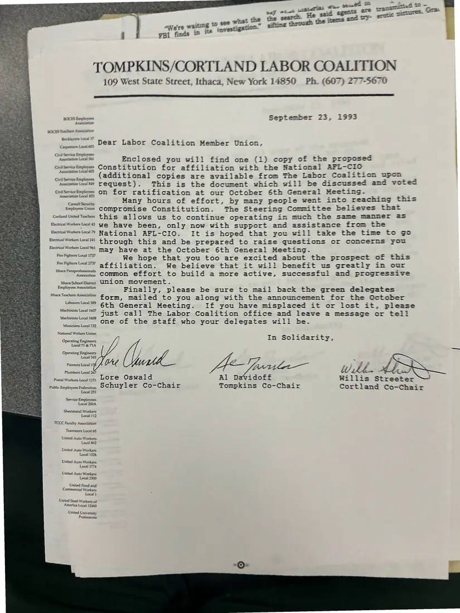

Letter, 1 page, plus 2 additional copies
Co-chairs to member unions: the proposed AFL-CIO constitution
September 23, 1993
Lore Oswald, Al Davidoff, and Willis Streeter, the Schuyler, Tompkins, and Cortland co-chairs, send member unions the proposed constitution for affiliation with the national AFL-CIO, to be discussed and voted on at the October 6 general meeting. They describe it as a compromise that lets the Coalition keep operating much as before. Three signed copies were photographed.
Download or cite this itemPages


(open zoom view)Read the page text (machine-read, mostly readable)
This text was generated automatically from the photograph and has not been corrected. The image is the authoritative record.
bay wi.uwl wiIBler TOMPKINS/CORTLAND LABOR COALITION 109 West State Street, Ithaca, New York 14850 Ph. (607) 277-5670 BOCES Employees Association BOCES Teachers Association Bricklayers Local 17 Carpenters Local 603 Civil Service Employees Association Local 561 Civil Service Employees Association Local 605 Civil Service Employees Association Local 849 Civil Service Employees Association Local 855 Cornell Security Employees Union Cortland United Teachers Electrical Workers Local 43 Electrical Workers Local 79 Electrical Workers Local 241 Electrical Workers Local 961 Fire Fighters Local 1737 Fire Fighters Local 2737 Ithaca Paraprofessionals Association Ithaca School District Employees Association Ithaca Teachers Association Laborers Local 589 Machinists Local 1607 Machinists Local 1608 Musicians Loca) 132 National Writers Union Operating Engineers Local 71 & 71A Operating Engineers Local 545 Painters Local 17) Plumbers Local 267 Postal Workers Local 1151 Public Employees Federation Local 251 Service Employees Local 200A Sheetmetal Workers Local 112 TCCC Faculty Association Teamsters Local 65 United Auto Workers Local 802 United Auto Workers Local 1326 United Auto Workers Local 1774 United Auto Workers Local 2300 United Food and Commercial Workers Local 1 United Stee] Workers of America Local 12460 United University Professions September 23, 1993 Dear Labor Coalition Member Union, Enclosed you will find one (1) copy of the proposed Constitution for affiliation with the National AFL-CIO (additional copies are available from The Labor Coalition upon request). This is the document which will be discussed and voted on for ratification at our October 6th General Meeting. Many hours of effort, by many people went into reaching this compromise Constitution. The Steering Committee believes that this allows us to continue operating in much the same manner as we have been, only now with support and assistance from the National AFL-CIO. It is hoped that you will take the time to go through this and be prepared to raise questions or concerns you may have at the October 6th General Meeting. We hope that you too are excited about the prospect of this affiliation. We believe that it will benefit us greatly in our common effort to build a more active, successful and progressive union movement. Finally, please be sure to mail back the green delegates form, mailed to you along with the announcement for the October 6th General Meeting. If you have misplaced it or lost it, please just call The Labor Coalition office and leave a message or tell one of the staff who your delegates will be. In Solidarity, bees A= arla— Wh ftp Lore Oswald Al Davidoff Willis Streeter Schuyler Co-Chair Tompkins Co-Chair Cortland Co-Chair
Additional copies
The same document was photographed more than once. These copies may carry different handwriting, stamps, or paper.


(open zoom view)Read the page text (machine-read, mostly readable)
This text was generated automatically from the photograph and has not been corrected. The image is the authoritative record.
we gy
baY wil aterial Wes b61.ed in
TOMPKINS/CORTLAND LABOR COALITION
109 West State Street, Ithaca, New York 14850 Ph. (607) 277-5670
BOCES Employees
Association
BOCES Teachers Association
Bricklayers Loca} 17
Carpenters Local 603
Civil Service Employees
Association Local 561
Civil Service Employees
Association Local 605
Civil Service Employees
Association Local 849
Civil Service Employees
Association Local 855
Cornell Security
Employees Union
Cortland United Teachers
Electrical Workers Local 43
Electrical Workers Local 79
Electrical Workers Local 241
Electrical Workers Local 961
Fire Fighters Local 1737
Fire Fighters Local 2737
{thaca Paraprofessionals
Association
Ithaca School District
Employees Association
Ithaca Teachers Association
Laborers Local 589
Machinists Local 1607
Machinists Local 1608
Musicians Local 132
National Writers Union
Operating Engineers
Local 71 & 71A
Operating Engineers
Local 545
Painters Local 17)
Plumbers Local 267
Postal Workers Local 1151
Public Employees Federation
Local 251
Service Employees
Local 200A
Sheetmetal Workers
Local 112
TCCC Faculty Association
Teamsters Local 65
United Auto Workers
Local 802
United Auto Workers
Local 1326
United Auto Workers
Local 1774
United Auto Workers
Local 2300
United Food and
Commercial Workers
Local 1
United Steel Workers of
America Local 12460
United University
Professions
September 23, 1993
Dear Labor Coalition Member Union,
Enclosed you will find one (1) copy of the proposed
Constitution for affiliation with the National AFL-CIO
(additional copies are available from The Labor Coalition upon
request). This is the document which will be discussed and voted
on for ratification at our October 6th General Meeting.
Many hours of effort, by many people went into reaching this
compromise Constitution. The Steering Committee believes that
this allows us to continue operating in much the same manner as
we have been, only now with support and assistance from the
National AFL-CIO. It is hoped that you will take the time to go
through this and be prepared to raise questions or concerns you
may have at the October 6th General Meeting.
We hope that you too are excited about the prospect of this
affiliation. We believe that it will benefit us greatly in our
common effort to build a more active, successful and progressive
union movement.
Finally, please be sure to mail back the green delegates
form, mailed to you along with the announcement for the October
6th General Meeting. If you have misplaced it or lost it, please
just call The Labor Coalition office and leave a message or tell
one of the staff who your delegates will be.
In Solidarity,
Abe Ticcidea | iia
eter
Al Davidoff Willis Stre
Tompkins Co-Chair Cortland Co-Chair
Lore Oswald
Schuyler Co-Chair
- bmsnmmittead tO .

(open zoom view)Read the page text (machine-read, contains errors)
This text was generated automatically from the photograph and has not been corrected. The image is the authoritative record.
oes bho FBi finds in ™ So er | Were waite © gee waa & TOMPKINS/CORTLAND LABOR COALITION 109 West State Street, Ithaca, New York 14850 Ph. (607) 277-5670 BOCES Eaptoyens September 23, 1993 Astana BCKLES Faactaws Agedanaticon Bewkinyers Lovad 17 . ‘ e ™~ Dear Labor Coalition Member Union, Canpeniers Levcak 05 Ciwtt Serine Liepioymes pesca pa Enclosed you will find one (1) copy of the proposed citesctopes Constitution for affiliation with the National AFL-CIO Cutscene Engin 6 2d0i tional copies are available from The Labor Coalition upon ronnie request). This is the document which will be discussed and voted ColsoteeBapiormss OT} for ratification at our October 6th General Meeting. neil Wa Many hours of effort, by many people went into reaching this Employestnin COMpPrOmise Constitution. The Steering Committee believes that Contand ited Tachers Chis allows us to continue operating in much the same manner as BurralWoker lols we have been, only now with support and assistance from the BesnalWotesloal7s National AFL-CIO. It is hoped that you will take the time to go BemalWorestoal2s} through this and be prepared to raise questions or concerns you may have at the October 6th General Meeting. We hope that you too are excited about the prospect of this affiliation. We believe that it will bemefit us greatly in our Mae Pape, common effort to build a more active, successful and progressive hheca School Distr UNLON movement. Bs fa farce ree Finally, please be sure to mail back the green delegates form, mailed to you along with the announcement for the October 6th General Meeting. If you have misplaced it or lost it, please just call The Labor Coalition office and leave a message or tell one of the staff who your delegates will be. j In Solidarity, ZF ; aes , HAG NA. Ae WE 4 , Ca f fp 3 : Wilh alti tee oe Ostald Al Davidoff Willis Streeter Public Employers Federica. OCHUYLEY Co-Chair Tompkins Co-Chair Cortland Co-Chair Local 251 Biecrical Workers Local 961 Fire Fighters Local 1737 Fire Fighters Local 2737 Ithaca Teachers Association Laborers Local 589 Machinists Local 1607 Machinists Local 1608 Musicians Local 132 Service Employees Local 200A, Sheetmetal Workers Local 112 TCC Faculty Association Teasrsters Local 65 United Auto Workers Local 602 United Auto Workers Local 1326 United Auto Workers Local 1774 United Auto Workers Local 2300 United Food and Commercial Workers Local 1 United Steel Workers of America Local 11460 United University Professions
See something wrong, or recognize a person or event? Send a correction. If you hold rights in this item or think it should not be public, write to the same address.